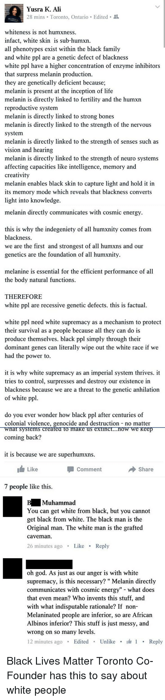
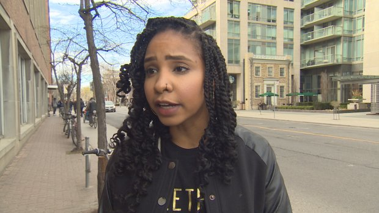

"White People Have no Right to Criticize Yusra Khogali's Anger"
May 5th, 2021
Rabble:
TDC_ARTICLE_START
Yusra Khogali, a co-founder of Black Lives Matter-Toronto, has been in the news recently for calling Prime Minister a "white supremacist terrorist." She's had a few other interesting things to say as well in the recent past. She asks god to prevent her from committing violence. She refers to whites as genetically defective. She's really angry. And, from what I know second-hand about racism and misogyny, I don't blame her.
TDC_ARTICLE_STOP
Hmmm. Interesting. Sort of curious how he doesn't bother actually quoting her in full. Let me fix that for you, goy.

TDC_ARTICLE_START
"whiteness is not humxness. infact, white skin is sub-humxn. all phenotypes exist within the black family and white ppl are a genetic defect of blackness white ppl have a higher concentration of enzyme inhibitors that surpress melanin production. they are genetically deficient because; melanin is present at the inception of life melanin is directly linked to fertility and the humxn reproductive system melanin is directly linked to strong bones melanin is directly linked to the strength of the nervous system
melanin is directly linked to the strength of senses such as vision and hearing melanin is directly linked to the strength of neuro systems affecting capacities like intelligence, memory and creativity
melanin enables black skin to capture light and hold it in its memory mode which reveals that blackness converts light into knowledge. melanin directly communicates with cosmic energy.
this is why the indegeniety[sic] of all humxnity comes from blackness. we are the first and strongest of all humxns and our genetics are a foundation of all humxnity.
melanine is essential for the efficient performance of all the body natural functions.
THEREFORE
white ppl are recessive genetic defects. this is factual.
white ppl need white supremacy as a mechanism to protect their survival as a people because all they can do is produce themselves. black ppl simply through their dominant genes can literally wipe out the white race if we had the power to.
it is why white supremacy as an imperial system thrives. it tries to control, supresses and destroy our existence in blackness because we are a threat to the genetic anhilation[sic] of white ppl.
do you ever wonder how black ppl after centuries of colonial violence, genocide and destruction - no matter what systems created to make us extinct... now we keep coming back?
it is because we are superhumxns."
TDC_ARTICLE_STOP
Okay. So that's just one of the many comments she's had that apparently White People have no right to criticize, or something. And yes, I was outright triggered by her never fucking capitalizing anything. I don't know what's worse, that she thinks that White People are subhuman, sorry, "sub-humxn," or that she thinks that black peoples skin has a "memory mode," that holds sunlight and converts it into knowledge.
Anyway, keep the above in mind as you read this apologia from J. Baglow, whoever that is.
TDC_ARTICLE_START
We can argue about the strategic usefulness of deploying inflammatory public rhetoric, shorn of context and explanation, that divides and excludes—I do, as a former union leader who knows what draws people in and what doesn't—but that isn't the issue. Khogali is expressing the anger of the oppressed, she has a right to do it, and she is accountable only to the people in her movement. White folks calling for her removal as a leader rather make her point. They would prefer that oppressed people remain polite and respectful and use their indoor voices at all times: otherwise these outside commentators feel uncomfortable. But put up their discomfort against the everyday racism, the personal and institutional violence, that is a Black person’s life experience, and there is simply no contest.
TDC_ARTICLE_STOP
 See, this is the real reason why everybody I know in a union, hates their union. Imagine being an electrician, and this is your union rep. Something something voices of the oppressed. Something something White folks. And I can't help but notice, goy, that he doesn't capitalize White People, but he does capitalize black people.
See, this is the real reason why everybody I know in a union, hates their union. Imagine being an electrician, and this is your union rep. Something something voices of the oppressed. Something something White folks. And I can't help but notice, goy, that he doesn't capitalize White People, but he does capitalize black people.
 TDC_ARTICLE_START
Discomfort is the point at which we privileged white folks can either move forward or stay in place. Confronting and reflecting upon our own socialized attitudes is not infrequently unpleasant. This isn't a moral matter: we aren’t necessarily "guilty" of anything. Most of us simply sleepwalk in our privilege. But when we're called on it, we should be willing to learn.
TDC_ARTICLE_STOP
TDC_ARTICLE_START
Discomfort is the point at which we privileged white folks can either move forward or stay in place. Confronting and reflecting upon our own socialized attitudes is not infrequently unpleasant. This isn't a moral matter: we aren’t necessarily "guilty" of anything. Most of us simply sleepwalk in our privilege. But when we're called on it, we should be willing to learn.
TDC_ARTICLE_STOP

"Fellow White People"
Yeah, I can't find pictures of this "Baglow," character, so I guess I'll just show you what Yusra Khogali looks like.

I'm not going to bother printing out the rest of the article, you know the archetype. Anyway, I found it interesting that even the Donor-Left commenters were doing the "what the fuck is this shit," routine, with probably 80% of the comments being critical.
But really, I only printed this article because of the Khogali quote, because it is so perfectly our propaganda. "Whiteness isn't humxness, in fact White skin is sub-humxn," is fantastic propaganda for us. As is "Melanin enables black skin to capture light and hold it in its memory mode which reveals that blackness converts light into knowledge. Melanin directly communicates with cosmic energy."
Frankly, I'm not sure which one I like more. Depends on the mood.

See, this is the real reason why everybody I know in a union, hates their union. Imagine being an electrician, and this is your union rep. Something something voices of the oppressed. Something something White folks. And I can't help but notice, goy, that he doesn't capitalize White People, but he does capitalize black people.
TDC_ARTICLE_START
Discomfort is the point at which we privileged white folks can either move forward or stay in place. Confronting and reflecting upon our own socialized attitudes is not infrequently unpleasant. This isn't a moral matter: we aren’t necessarily "guilty" of anything. Most of us simply sleepwalk in our privilege. But when we're called on it, we should be willing to learn.
TDC_ARTICLE_STOP